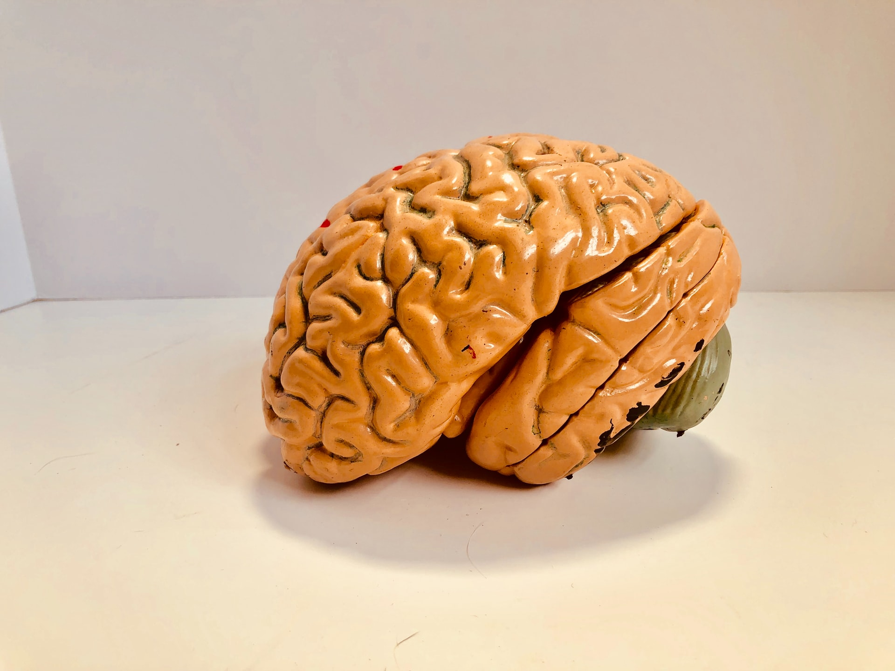

Cognitive Psychology
Cognitive psychology is the study of human cognition.
Philosophically, ruminations of the human mind and its processes have been around since the times of the ancient Greeks. In 387 BCE, Plato is known to have suggested that the brain was the seat of the mental processes.[2] In 1637, René Descartes posited that humans are born with innate ideas, and forwarded the idea of mind-body dualism, which would come to be known as substance dualism (essentially the idea that the mind and the body are two separate substances).[3] From that time, major debates ensued through the 19th century regarding whether human thought was solely experiential (empiricism), or included innate knowledge (rationalism). Some of those involved in this debate included George Berkeley and John Locke on the side of empiricism, and Immanuel Kant on the side of nativism.[4]

With the philosophical debate continuing, the mid to late 19th century was a critical time in the development
of psychology as a scientific discipline.Two discoveries that would later play substantial roles in cognitive psychology
were Paul Broca's discovery of the area of the brain largely responsible for language production,[3] and Carl Wernicke's
discovery of an area thought to be mostly responsible for comprehension of language.[5] Both areas were subsequently
formally named for their founders and disruptions of an individual's language production or comprehension due to trauma
or malformation in these areas have come to commonly be known as Broca's aphasia and Wernicke's aphasia.